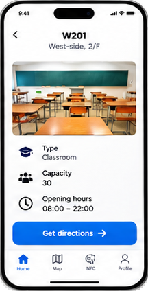
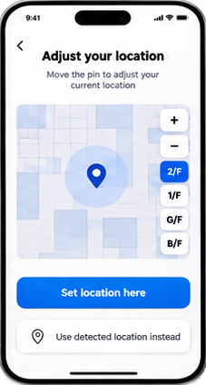

Find your
destination.
Search classrooms, facilities and campus services. Room details identify the building and floor automatically.

Search classrooms, facilities and campus services. Room details identify the building and floor automatically.

Wi-Fi signals would estimate your building, floor and position. Confirm the blue marker or move it to the right corridor.

Choose how to change floors before guidance begins. At the landing, confirm the newly detected floor and continue.

The proposed AI assistant would calculate your route from the indoor map, estimate walking time and distance, and guide you to the door.
Follow the route to W201Wheelchair-friendly routes would use verified ramps, lifts and accessible corridors, avoid stairs and lead to accessible facilities.
Save route preferences in your profile. At a compatible NFC reader, a college-issued credential could enable authorised entry.
Facilities are places such as the library, cafeteria or accessible toilets. College services include reception, student support and the IT helpdesk.
Yes, where the campus has verified a continuous step-free path. A lift or ramp must connect to accessible corridors on both floors.
The access proposal is limited to people with valid college credentials at compatible NFC readers.